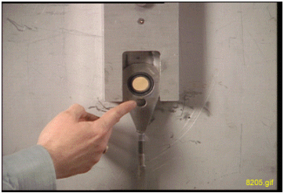

Illustration 9: Alignment Bearing to Center Position

Adjustment of the Alignment Bearing:
For the vertical adjustment, a clockwise rotation results in the alignment bearing moving down. Use an adjustable wrench for the vertical adjustment.
For the horizontal adjustment, a clockwise rotation results in the alignment bearing moving to the left. Use the 3/8 inch (12 mm) T-bar Allen wrench.